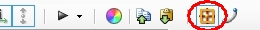

Rectangular selection can now be started even when a map element is highlighted. This means that you can now use it to select sectors, which are completely surrounded by other sectors.
Hold Shift to enable additive selection, hold Ctrl to enable subrtractive selection, hold Ctrl-Shift to intersect with existing selection.
Current behaviour is indicated by selection outline: additive selection uses Highlight color, subtractive selection uses inverted Highlight color.
Rectangular selection mode in Sectors and Linedefs modes can now be toggled between "Select inside" (classic behavior: only map elements which are fully inside selection will be affected) and "Select touching" (map elements which are partially inside selection will be also affected) using this button in the toolbar:
